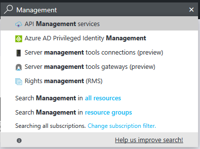

INFO
When using ASP.NET Core Endpoint Routing refer to ASP.NET Core Swashbuckle Open API v3 instead

Open API is a specification and complete framework implementation for describing, producing, consuming, and visualizing RESTful web services. ServiceStack implements the OpenAPI Spec back-end and embeds the Swagger UI front-end in a separate plugin which is available under OpenAPI NuGet package:
<PackageReference Include="ServiceStack.Api.OpenApi" Version="8.*" />
Installation
You can enable Open API by registering the OpenApiFeature plugin in AppHost with:
public override void Configure(Container container)
{
...
Plugins.Add(new OpenApiFeature());
// Uncomment CORS feature if it needs to be accessible from external sites
// Plugins.Add(new CorsFeature());
...
}
Then you will be able to view the Swagger UI from /swagger-ui/. A link to Swagger UI will also be available from your /metadata Metadata Page.
Open API Attributes
Each route could have a separate summary and description. You can set it with Route attribute:
[Route("/hello", Summary = @"Default hello service.",
Notes = "Longer description for hello service.")]
You can set specific description for each HTTP method like shown below:
[Route("/hello/{Name}", "GET", Summary="Says 'Hello' to provided Name",
Notes = "Longer description of the GET method which says 'Hello'")]
[Route("/hello/{Name}", "POST", Summary="Says 'Hello' to provided Name",
Notes = "Longer description of the POST method which says 'Hello'")]
You can also document your services in the OpenAPI with the new [Api] and [ApiMember] annotation attributes, e,g: Here's an example of a fully documented service:
[Api("Service Description")]
[Tag("Core Requests")]
[ApiResponse(HttpStatusCode.BadRequest, "Your request was not understood")]
[ApiResponse(HttpStatusCode.InternalServerError, "Oops, something broke")]
[Route("/swagger/{Name}", "GET", Summary = "GET Summary", Notes = "Notes")]
[Route("/swagger/{Name}", "POST", Summary = "POST Summary", Notes="Notes")]
public class MyRequestDto
{
[ApiMember(Name="Name", Description = "Name Description",
ParameterType = "path", DataType = "string", IsRequired = true)]
[ApiAllowableValues("Name", typeof(Color))] //Enum
public string Name { get; set; }
}
Please note, that if you used ApiMember.DataType for annotating OpenApiFeature then you need to change the types to OpenAPI type when migrating to OpenApiFeature. For example, annotation of
[ApiMember(DataType="int")]
need to be changed to
[ApiMember(DataType="integer", Format="int32")]
Here is the table for type migration
| Swagger Type (DataType) | OpenAPI Type (DataType) | OpenAPI Format (Format) |
|---|---|---|
| Array | array | |
| boolean | boolean | |
| byte | integer | int |
| Date | string | date |
| string | date-time | |
| double | number | double |
| float | number | float |
| int | integer | int32 |
| long | integer | int64 |
| string | string |
You can use [ApiAllowableValues] lets you anotate enum properties as well as a restriction for values in array, e.g:
[ApiAllowableValues("Includes", Values = new string[] { "Genres", "Releases", "Contributors" })]
public string[] Includes { get; set; }
INFO
The use of ApiMember turns your DTO properties as opt-in only for OpenApi metadata.
Meaning that only properties annotated with [ApiMember] will be included in the OpenApi metadata for classes
that use [ApiMember] on any of its properties.
Group APIs with Tags
You can tag the DTO with [Tag] attribute. Attributes are annotated by the same tag are grouped by the tag name in Swagger UI. DTOs can have multiple tags, e.g:
[Tag("Core Features")]
[Tag("Scheduler")]
public class MyRequest { ... }
You can Exclude properties from being listed in OpenAPI with:
[IgnoreDataMember]
Exclude properties from being listed in OpenAPI Schema Body with:
[ApiMember(ExcludeInSchema=true)]
Exclude Services from Metadata Pages
To exclude entire Services from showing up in OpenAPI or any other Metadata Services (i.e. Metadata Pages, Postman, NativeTypes, etc), annotate Request DTO's with:
[ExcludeMetadata]
public class MyRequestDto { ... }
Operation filters
You can override operation or parameter definitions by specifying the appropriate filter in plugin configuration:
Plugins.Add(new OpenApiFeature
{
OperationFilter = (verb, operation) => operation.Tags.Add("all operations")
});
Available configuration options:
ApiDeclarationFilter- allows to modify final result of returned OpenAPI jsonOperationFilter- allows to modify operationsSchemaFilter- allows to modify OpenAPI schema for user typesSchemaPropertyFilter- allows to modify propery declarations in OpenAPI schema
Properties naming conventions
You can control naming conventions of generated properties by following configuration options:
UseCamelCaseSchemaPropertyNames- generate camel case property namesUseLowercaseUnderscoreSchemaPropertyNames- generate underscored lower cased property names (to enable this featureUseCamelCaseModelPropertyNamesmust also be set)
Example:
Plugins.Add(new OpenApiFeature
{
UseCamelCaseSchemaPropertyNames = true,
UseLowercaseUnderscoreSchemaPropertyNames = true
});
Change default Verbs
If left unspecified, the [Route] attribute allows Services to be called from any HTTP Verb which by default
are listed in the Open API specification under the most popular HTTP Verbs, namely GET, POST, PUT and DELETE.
This can be modified with AnyRouteVerbs which will let you specify which Verbs should be generated
for ANY Routes with unspecified verbs, e.g. we can restrict it to only emit routes for GET and POST Verbs with:
Plugins.Add(new OpenApiFeature
{
AnyRouteVerbs = new List<string> { HttpMethods.Get, HttpMethods.Post }
});
Miscellaneous configuration options
DisableAutoDtoInBodyParam- disables addingbodyparameter for Request DTO to operationsLogoUrl- url of the logo image for Swagger UI
Example:
Plugins.Add(new OpenApiFeature
{
DisableAutoDtoInBodyParam = true
});
Virtual File System
The docs on the Virtual File System shows how to override embedded resources:
Overriding OpenAPI Embedded Resources
ServiceStack's Virtual File System supports multiple file source locations where you can override OpenAPI's embedded files by including your own custom files in the same location as the existing embedded files. This lets you replace built-in ServiceStack embedded resources with your own by simply copying the /swagger-ui files you want to customize and placing them in your Website Directory at:
/swagger-ui
/css
/fonts
/images
/lang
/lib
index.html
swagger-ui.js
Injecting custom JavaScript
As part of the customization you can add custom patch.js and patch-preload.js:
/swagger-ui
patch.js
patch-preload.js
which will be injected in the /swagger-ui index page, patch-preload.js is embedded before swaggerUi.load() is called:
// contents of patch-preload.js
window.swaggerUi.load();
So you can use it to customize the swaggerUi configuration object before it's loaded, whilst patch.js is embedded just before the end of the </body> tag, e.g:
<script type='text/javascript'>
// contents of patch.js
</script>
</body>
Swagger UI Security
There are 2 custom security methods supported Bearer and Basic Auth.
You can specify to use Swagger's support for API Key Authentication with:
Plugins.Add(new OpenApiFeature
{
UseBearerSecurity = true,
});
This will instruct Swagger to use their API Key Authentication when clicking the Authorize button which will be sent in API requests to your Authenticated Services. As the value field is for the entire Authorization HTTP Header you'd need to add your JWT Token or API Key prefixed with Bearer :

Which you can use to use to Authenticate with "Bearer token" Auth Providers like API Key and JWT Auth Providers.
Basic Auth in OpenAPI
You can instruct Swagger to use HTTP Basic Auth with:
Plugins.Add(new OpenApiFeature
{
UseBasicSecurity = true,
});
This lets Users call protected Services using the Username and Password fields in Swagger UI. Swagger UI sends these credentials with every API request using HTTP Basic Auth, which can be enabled in your AppHost with:
Plugins.Add(new AuthFeature(...,
new IAuthProvider[] {
new BasicAuthProvider(), //Allow Sign-ins with HTTP Basic Auth
}));
To login, you need to click "Authorize" button.

And then enter username and password.

Also you can click "Try it out" button on services, which requires authentication and browser will prompt a window with user/password field for entering basic auth credentials.
Alternatively you can authenticate outside Swagger (e.g. via an OAuth Provider) which will also let you
call protected Services in /swagger-ui.
Generating AutoRest client
You can use OpenAPI plugin to automatically generate client using Autorest. To use AutoRest first install it from npm:
npm install -g autorest
Then you need to download the Open API specification for your Services using a tool like curl:
curl http://your.domain/openapi > openapi.json
Or using iwr if you have PowerShell installed:
iwr http://your.domain/openapi -o openapi.json
You can then use the openapi.json with autorest to generate a client for your API in your preferred language, e.g:
autorest --latest-release -Input openapi.json -CodeGenerator CSharp -OutputDirectory AutoRestClient -Namespace AutoRestClient
This will generate directory containing your model types and REST operations that you can use with the generated client, e.g:
using (var client = new SampleProjectAutoRestClient("http://localhost:20000"))
{
var dto = new SampleDto { /* .... */ };
var result = client.SampleOperation.Post(body: dto);
// process result
}
AutoRest clients will allow usage of tooling that have adopted AutoRest and is a good stop gap solution for generating native clients for languages that Add ServiceStack Reference doesn't support yet like Python and Ruby.
AutoRest Generated Clients vs Add ServiceStack Reference
However AutoRest generated clients are similar to WCF Service Reference generated clients where it generates RPC-style Clients that emits both implementation logic and models for sending each request that's coupled to external HttpClient and JSON.NET dependencies. This approach generates significantly more code generation that populates a directory containing multiple implementation and Model classes generated for each Service.
In contrast Add ServiceStack Reference adopts the venerable Data Transfer Object, Gateway and Remote Facade Service patterns where it only needs to generate clean, implementation-free DTO models that it captures in a single source file for all supported languages.
The generated DTOs are cleaner and more reusable where it isn't coupled to any Serialization implementation and can be reused in any of ServiceStack's message-based Service Clients and Serialization Formats or different Service Gateway implementations. The models are also richer where it's able to include additional metadata attributes and marker interfaces that isn't possible when tunneling through a generic API specification.
The use of intelligent generic Service Clients will always be able to provide a richer more productive development experience that can enable higher-level, value-added functionality like Structured Error Handling, Smart HTTP Caching, Auto Batching, Encrypted Messaging, AutoQuery Streaming, Request Compression, integrated authentication and lots more.
Known issues
Autorest generated clients do not support application/octet-stream MIME type, which is used when service returns byte[] array. You can track this issue on Github.
Publish Azure Management API
Login to Azure Portal and search for API management service.

Choose API management service. In opened window click Add button.

Fill the creation form. Put your own values in Name, Resource Group, Organization name and Administrator email. When creation form will be ready, click Create button.

Wait while Management API will be activated. It can take more than forty minutes. When it ready click on created API management resource.

In opened window click APIs - PREVIEW menu item on the left pane.

Choose OpenAPI specification in Add API section.

Fill the url with location of you services, ended with /openapi or just click Upload button and upload OpenAPI json definition, which is available at /openapi path of your services.

After successfull import you should see list of available operations for your services